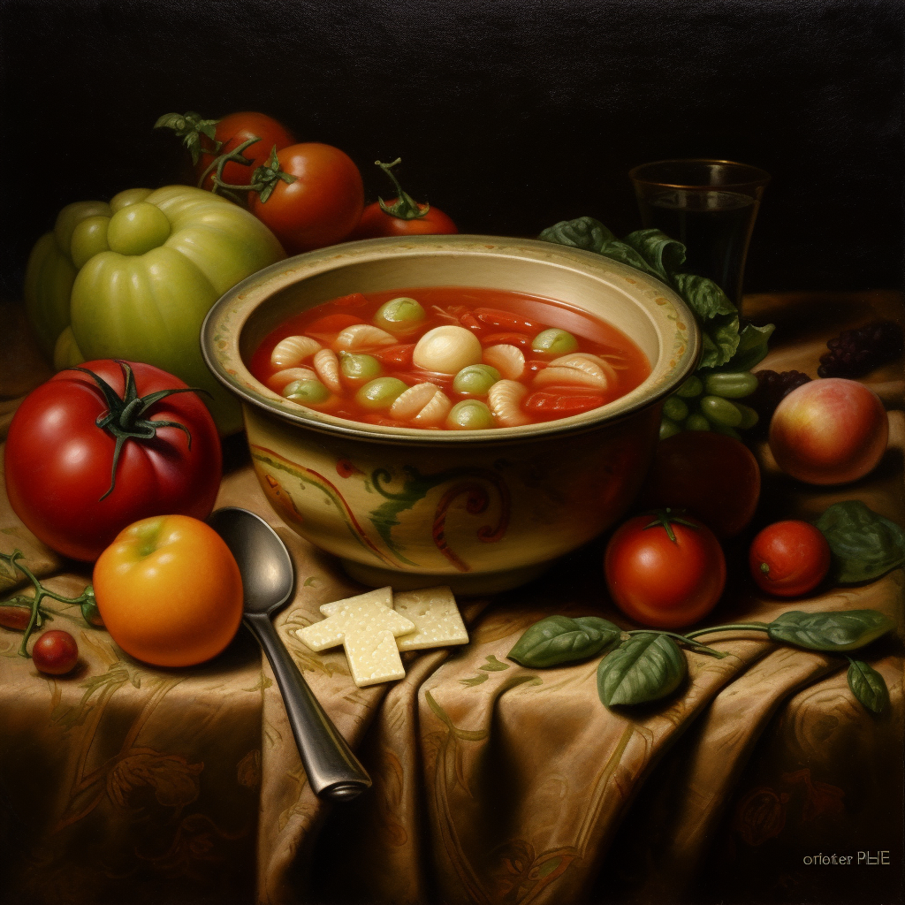
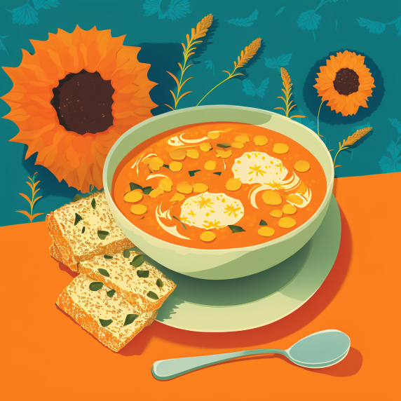
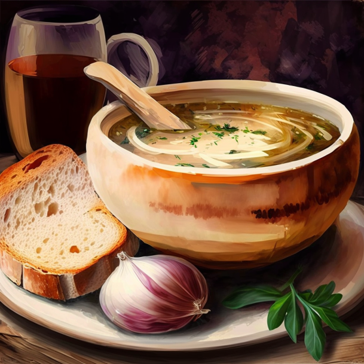

The Home Cooking Series
Home Recipe - Hungarian goulash
Home Recipe - Japanese Miso Soup

Home Recipe - Genoese Minestrone Soup

Home Recipe - Orange Coloured Soup

Home Recipe - French Onion Soup